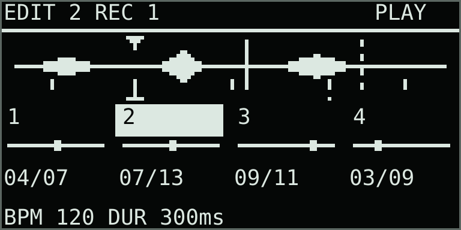
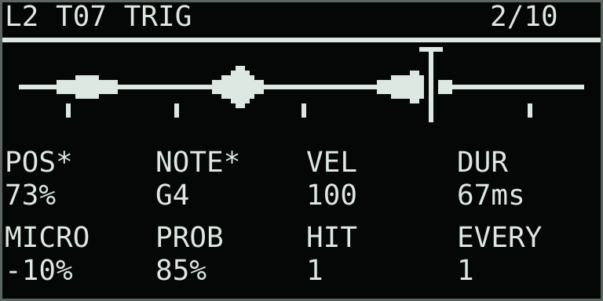
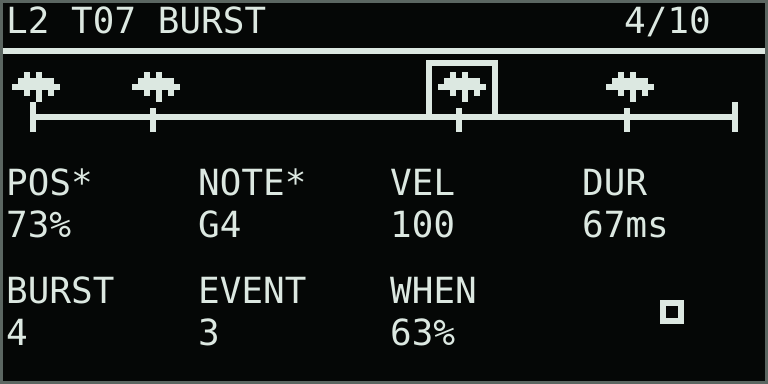
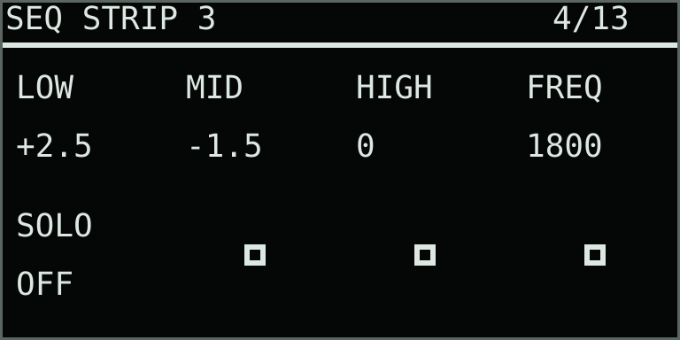

Four lanes · independent trigger clocks · clip composition
Sequence
Four independent sample sequences, each with one sample lane, one of the fifteen playback engines and two voices. Length, rate and rotation belong to each trigger sequence. Pitch and position belong to its trigs. Each lane stays on its assigned sample without stack scanning. Sequence adds a four-lane mixer with level, stereo balance, EQ and priority ducking.
Start a sequence
- Open Capture + Menu → Mode and choose Sequence.
- Track 1–4 selects a lane. Shift + Track opens its sample browser. Choose its engine on the normal engine pages.
- Tap pads to enable trigs. Step 1 is at the top left; numbering moves right, then down, to step 32 at the bottom right.
- Press Play. Authored trigs play immediately, without recorded launch notes.
The pads show the selected lane while other sequences continue. Enabled trigs are cyan, inactive steps dim red, and the playhead green. Pads beyond the active length are dark. A held editing step is white. The OLED shows all four lane positions. On the waveform, short ticks show enabled trig starts. The small pointer above the waveform shows the currently playing step's POS; while stopped, it shows the selected step's POS. An underline below the waveform stays at the newest sounding voice's start. A solid vertical line shows that voice's moving sample reader; a dashed line shows a second reader. A short sample may loop from 75% back to the beginning between screen refreshes, so its moving line can appear near the left while the fixed start marks remain at 75%. The footer shows the newest voice's DUR in milliseconds or seconds; at rest, it shows the lane default.

SEQ LANE
Menu opens parameter pages. Click the main encoder from the overview to open SEQ LANE. The overview encoders use these same assignments. Capture + Menu and Capture + Track retain their normal navigation groups.
| Knob | Display | Range | What it controls |
|---|---|---|---|
| 1 | LEN | 1–32 | Active length. Trigs outside it remain stored. |
| 2 | RATE | 1/1–1/64, with triplets | Step duration at Thru’s BPM, independent for each lane. |
| 3 | ROT | 0–31 | Rotation within the active length. |
| 4 | ON | OFF / ON | Lane activation. OFF skips its new sequence triggers. |
| 5 | VEL | 1–127 | Default trig velocity. |
| 6 | DUR | 0.01–32 steps or 10 ms–30 s | Default note duration. SEQ SETUP UNIT chooses STEP or TIME. |
| 7 | BPM | 40–240 | Shared transport tempo. |
| 8 | CLIP | 1–64 beats | Clip repetition span for composition; lane phases continue across its repetitions. |
Changing RATE during playback switches that lane to the new step clock without clearing its trigs or sample. The next hit follows the new division; a slower RATE can naturally leave a longer interval before it sounds. In Capture + Menu, SEQ SETUP opens ROOT, SCALE, ENTRY and duration UNIT; SEQ LANE is available under VOICE.
Hold to edit
Hold a pad for about 300 ms to open TRIG without disabling it. Release to return to the sequence overview. A short tap toggles it. A star marks an explicit lock; unstarred values inherit their defaults. Hold Delete/X while turning POS, NOTE, VEL or DUR to remove that lock.

| Knob | Display | Range | What it controls |
|---|---|---|---|
| 1 | POS | 0–100% | Sample start position; inherits the lane engine’s POS. |
| 2 | NOTE | −48–+48 semitones | Pitch offset from the lane root. Unlocked trigs use the root. |
| 3 | VEL | 1–127 | Trigger velocity; inherits SEQ LANE VEL. |
| 4 | DUR | 0.01–32 steps or 10 ms–30 s | Note duration in the selected UNIT; inherits SEQ LANE DUR until locked. |
| 5 | MICRO | −50–+50% | Early or late offset of the trig and all its Burst events. |
| 6 | PROB | 0–100% | Probability for the whole trig, including its Burst. |
While stopped, holding a trig auditions it. Changing NOTE, POS or DUR auditions the new setting. During playback, edits affect its next scheduled occurrence, leaving already sounding trigs unchanged.
Burst
Move to BURST while keeping the step held. Count, event selection, timing and the selected event’s POS, NOTE, VEL and DUR are together on this page. EVENT shows TRIG for shared step values or 1–8 for an individual retrigger. Choose a numbered event before changing WHEN; edits to POS, NOTE, VEL or DUR lock only that event. Delete/X + encoder removes a lock. Delete/X + step pad clears the complete trig.

| Knob | Display | Range | What it controls |
|---|---|---|---|
| 1–4 | POS / NOTE / VEL / DUR | As on TRIG | Values for the selected event, inherited from the trig until locked. |
| 5 | BURST | 1–8 events | Number of retriggers; changing the count evenly spaces their initial positions. |
| 6 | EVENT | TRIG / 1–8 | Selects the shared trig or an individual event. |
| 7 | WHEN | 0–99.9% of step | Moves the selected event within the step. Select event 1–8 first. |
Events share the trig’s probability and microtime. Their notes can overlap within the lane’s two-voice budget. SEQ SETUP provides ROOT, SCALE, ENTRY and UNIT. CHROM allows semitone entry; SCALE restricts NOTE entry to scale members. Pads remain sequence steps.
Duration and envelope
SEQ SETUP → UNIT chooses how DUR is measured for the selected lane. STEP sets 0.01–32 lane steps: RATE, BPM and clip speed change the sounding duration together. TIME sets 10 ms–30 s: changing RATE, BPM or clip speed changes when trigs arrive but leaves the note duration fixed. The lane DUR is the default; a trig or Burst event can lock its own DUR in the active unit. A star marks an override. Switching UNIT retains the previous values in each unit, so they can be selected again.
DUR is the full note lifetime, including the envelope release. Attack, decay and release fit inside that time; if their total is longer, they shorten proportionally. Otherwise Sustain fills the remaining time. A short one-shot sample can finish before DUR; a looping engine can fill it. Each lane has two voices for overlapping notes, with smoothed voice stealing if more overlap.
Sequence mixer
Open SEQ MIX under Mix/FX to set four lane levels and stereo balances. The Move Up/Down arrows step directly through SEQ STRIP 1, 2, 3 and 4, then SEQ DUCK, within the same Mix/FX group. Each strip page always edits its numbered lane: browsing or changing a strip does not change the selected sequence or the destination of an audio take. The strip is after its engine and insert effects, before the four lanes sum. Level 1.00, centered balance, flat EQ, Solo off and priority Key off are neutral defaults.
| Page | Knobs | What it controls |
|---|---|---|
| SEQ MIX | 1–4 LVL1–LVL4; 5–8 PAN1–PAN4 | Lane levels and stereo balance. PAN left or right reduces the opposite channel; it does not sum stereo to mono. |
| SEQ STRIP 1–4 | 1 LOW; 2 MID; 3 HIGH; 4 FREQ; 5 SOLO | That numbered lane’s low, mid and high EQ gains (±12 dB), mid frequency (120–8000 Hz) and solo. LOW and HIGH use fixed bands near 170 Hz and 4.2 kHz. EQ values are in dB; FREQ is in Hz. |
| SEQ DUCK | 1 KEY; 2 DEPTH; 3 THR; 4 ATK; 5 HOLD; 6 REL; 7 HPF; 8 KNEE | Choose a protected lane and set how its signal ducks the other three. The detector listens after that lane’s strip and level. Delay and reverb sends follow the ducked signal. |

Delay and Reverb are shared processors with a separate send level from each lane. Tape processes the combined signal. FX ORDER is a shared page that places Delay, Reverb and Tape relative to one another; its position does not depend on the selected lane. Delay and Reverb keep independent send inputs, so moving Delay before Reverb does not feed the delay output into the reverb.
Start priority ducking with KEY set to the lane that should stand out, DEPTH around 6 dB and THR around −24 dB. Raise DEPTH or lower THR if the other lanes need more room. ATK and REL smooth the level change; HOLD keeps the reduction briefly after the key fades. HPF removes bass from the detector and KNEE softens the onset. Solo is an audition control; turn it off before saving a performance where all lanes should sound.
Choosing an engine
Each lane keeps its own chosen engine and its own parameter pages. Trig POS supplies a start or source-locus input to that engine; NOTE, VEL and DUR remain per trig. Sample gives the most literal start-and-play behavior. Slices maps POS to its slice region. Cutups, Glitch, Texture and Pulsar can add internal rhythm after each trig. Motion, Lanes, Grains and Weave evolve within longer notes, while Wavesets, Prism, Morph, Formant and Stochastic reshape the source more substantially. Try TIME DUR or a longer STEP DUR for sustained engines. Morph can still use its paired source lane as designed by that engine.
Sequence POS is not snapped to a zero crossing. A trig starts at the chosen position so timing and transients remain predictable; Thru’s short retrigger fade, voice-steal transition and per-note ADSR smooth the edges. A very short DUR, abrupt processing setting or loud source discontinuity can still be audible. For a clean transient, move POS slightly before the attack and give the envelope a few milliseconds of attack and release.
Recording
Track buttons retain their audio-lane role. Track 2 selects sample lane 2, sequence 2 and the destination for the next audio take. During a take, that destination remains fixed while other sequences are browsed. The header distinguishes them, for example EDIT 3 REC 1. Replacing audio retains the lane’s sequence.
Shift + Record starts or stops audio recording. Record alone captures performance gestures: supported lane activation, mute, length, rate, rotation, default values and normal parameter changes. Trig edits change authored clip content directly.
While a clip is playing, pressing Mute without performance recording changes that clip’s starting mute state, so it remains set after Stop and Play. A mute press made during performance recording is a timed gesture: playback starts from the saved state and applies the gesture when its recorded position arrives. An empty REPLACE performance take removes previous recorded gestures and notes while retaining the authored sequence; it also sets a new clip duration.
Clips and chains
The bottom buttons remain clip launchers. Each clip stores four sequences, lane programs and sample references. New empty clips inherit the sound setup and samples with empty trigs. Clip Copy/Paste includes the authored sequences. Clearing a clip removes its trigs and performance gestures while retaining its sound setup and samples.
Repeating a clip, including another chain entry that references it, preserves lane phases. A fresh Play start or a different clip resets its sequences. CLIP sets the composition span without forcing all four lanes to complete a cycle. Existing clip rate, chain repeats and transitions remain available.
Shortcuts and MIDI
| Control | Action |
|---|---|
| Copy + main pad | Copy its complete trig, locks and Burst. |
| Shift + main pad | Paste the copied trig into this step, replacing its previous content. Copy a trig first. |
| Delete/X + main pad | Clear that trig. |
| Delete/X + trig encoder | Restore the inherited value. |
| Mute | Mute the selected lane; supported during performance recording. |
The MIDI guide and NRPN CSV list sequence controls. Part channels 5–8 address lanes 1–4. Select STEP and optionally EVENT before adjusting trig values. Custom CC can assign these destinations without NRPN. Standard note MIDI plays the corresponding lane through its shared two-voice budget.